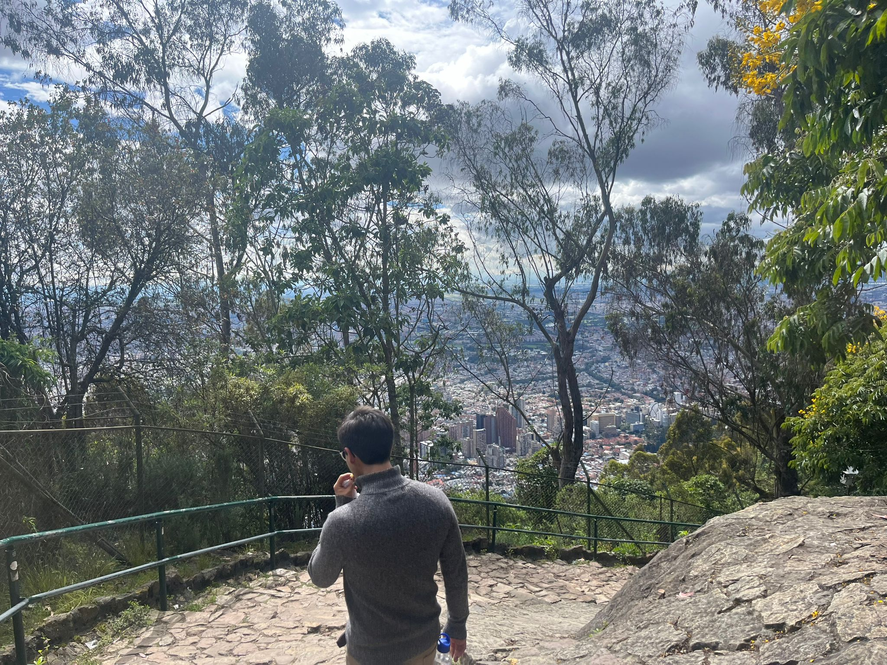

About Me
Currently at the University of Copenhaguen to do my master thesis.
Mathematics master student with a minor in Quantum Science and Engineering at EPFL.
Here is my CV.
Mathematics
Broadly speaking I am interested in algebraic topology. I have done some projects to understand the machinery behind on homological stability, where I focused on symmetric groups and mapping class groups of surfaces. Now I work on the harmonic campactification of the mapping class group of Riemann surfaces via Sullivan diagrams. To approach this problem I take inspiration from infinity operads on normalized cacti.
Quantum Algorithms
Recently, I gained interest in quantum technologies. Now, I focus on Variational Quantum Algorithms, mainly eigensolvers. I study the Riemannian geometry and Lie group theory behind such algorithms.
Due to the latest results in quantum computing I am very interested into quantum error correction. And thanks to my mathematical background I began studying post-quantum cryptography.
Publications
- Finite groups as homotopy self-equivalences of finite spaces, GJM, Volume 9, Issue 2 (2024), 15-21 (pdf).
Projects
Talks
- Riemannian Geometry of VQA, QIC Group Meeting EPFL, January 9th 2025
- Homological stability of mapping class groups, Topology Workshop EPFL, January 7th 2025
- Spectral sequences for homological stability, Topology Reading Group EPFL, November 27th 2024
- Quillen's small object argument, Topology Reading Group, October 30th 2024
Contact
Email: juan.celisrojas@epfl.ch
LinkedIn: LinkedIn Profile
